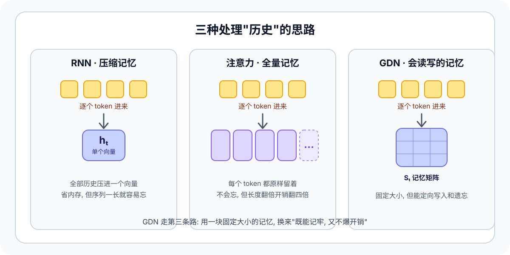
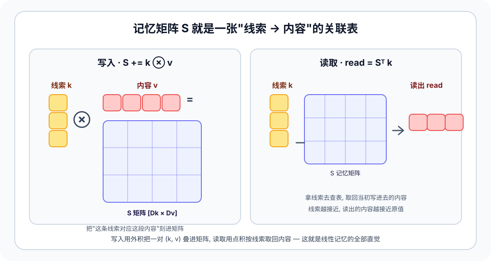
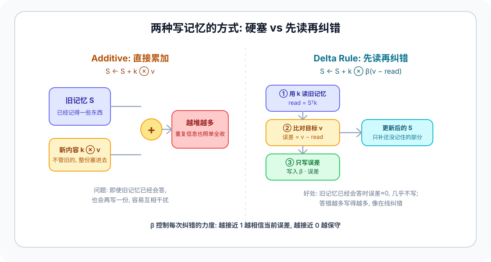
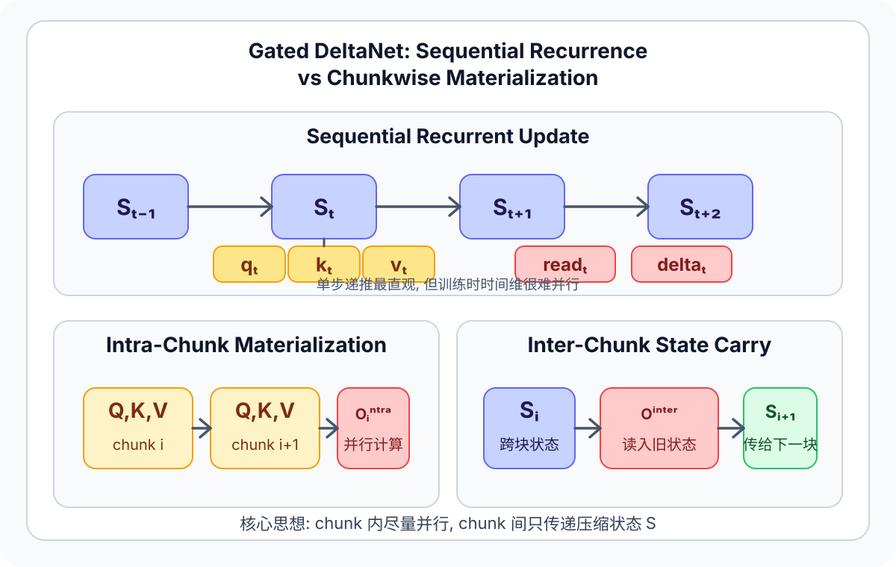

Start
0. 你会得到什么
如果你最近在看 Qwen3-Next, Kimi Linear 或 Flash Linear Attention 这一支路线, 这页会帮你把 GDN 的最小闭环先跑起来.重点不是工程堆料, 而是让你能亲手比较 sequential recurrence 和 chunkwise materialization 到底在算同一件什么事.
一份纯 PyTorch 学习实现
gdn.py 包含 gated_delta_rule_recurrent,
gated_delta_rule_chunkwise 和 SimpleGatedDeltaNet.
先检查语义一致性
你可以直接比较 recurrent 与 chunkwise 的输出差异, 先确认它们在教学规模上是对齐的.
这不是生产级内核
这里没有 fused CUDA kernel, 没有 depthwise conv mixing, 也没有 hybrid attention 训练脚本.
Why
1. 先想清楚: 模型怎么"记住"前面读过的东西
这一节不需要任何公式, 只要一个生活类比. 读小说读到第 500 页提到"那把钥匙", 你能想起它是第 30 页出现过的, 是因为脑子里一直留着一份前情记忆. 语言模型也要解决同样的问题: 处理当前这个词时, 怎么用上前面所有词的信息?

| 思路 | 怎么存历史 | 优点 | 代价 |
|---|---|---|---|
| RNN | 把所有历史压进一个固定向量 hₜ |
内存恒定, 推理快 | 序列一长, 早期信息被挤掉, 容易忘 |
| 注意力 | 每个 token 原样全部留着 | 几乎不丢信息, 效果强 | 序列翻倍, 计算和显存翻四倍 (O(T²)) |
| GDN | 固定大小记忆矩阵 Sₜ, 支持定向读 / 写 / 遗忘 |
内存恒定, 又比朴素 RNN 记得准 | 写入规则更复杂, 需要专门推导才能高效训练 |
Memory
2. 这块"记忆"到底是什么: 一张 key → value 的关联表
很多人卡在 S ∈ R^{Dk×Dv} 这种符号, 不知道它对应现实里的什么. 其实它就是一张关联表,
类比查字典最直观: 想记住"看到线索 A 就想起内容 X", 就把 (A, X) 存进矩阵 S; 以后拿出线索 A (或跟 A 很像的线索) 就能取回 X.
这里的"线索"就是 key k, "内容"就是 value v. 写入和读取各对应一个最基础的线性代数操作:

写入 = 外积
S = S + k ⊗ v. 外积 k ⊗ v 生成一个 [Dk × Dv] 矩阵, 把"线索 k 的方向"和"内容 v"绑在一起,
叠加到 S 上, 相当于在表里新增一行"看到 k 就回忆 v".
读取 = 点积
read = Sᵀ k. 在做"线索匹配": 查的线索和写入时的 k 方向越一致, 点积越大, 取回的内容越接近原来的 v;
完全不相关就接近读不出东西.
[Dk, Dv], 所以读写成 Sᵀ k, 写写成 k ⊗ delta.
这只是实现摆放方向, 数学没变.
S = S + kₜ ⊗ vₜ 把每个 token 硬叠进去. 下一节看它有什么毛病.
Delta Rule
3. 怎么往记忆里写: 从"硬塞"到"先读再纠错"
第 2 节里的写入 S = S + kₜ ⊗ vₜ 叫 additive (加法) 更新, 简单, 但有个明显问题.

关键就在第 2 步的 v_t - read_t:
记对了 → 几乎不写
如果记忆已经记对, read_t 接近 v_t, 差距接近 0, 这一步几乎什么都不写, 不浪费也不污染.
记错了 → 用力修正
如果记错或还没记, 差距很大, 这一步就用力修正, 而且主要沿当前 kₜ 的方向改.
beta_t 是写入强度旋钮
beta_t ∈ [0, 1]: 越接近 1 越相信当前这步的修正, 越接近 0 越保守.
Gated
4. 最后一块拼图: 给记忆装"遗忘开关" → Gated DeltaNet
delta rule 解决了"写得准", 但它默认旧记忆永远不褪色. 现实里我们往往希望旧信息随时间慢慢淡出, 给新信息腾地方 —— 这正是 RNN 里"门控 (gating)"做的事, 也是 GDN 里那个 "Gated" 的来历.
做法很简单: 每一步先让整块记忆乘上一个 (0, 1] 之间的衰减系数 exp(g_t), 再做 delta 写入:
exp, 保证 exp(g_t) ∈ (0, 1] ——
每步只"保留一部分"旧记忆, 不会放大到发散.
| 机制 | 状态更新 | 读历史方式 | 直觉 |
|---|---|---|---|
| 普通 additive | 直接累加新值 | 从累计状态线性读出 | 只塞不查, 容易堆乱 |
| delta rule | 按残差修正写入 | 先读旧记忆再修正 | 在线纠错 |
| Gated DeltaNet | 衰减门 + delta 写入 | 同时有遗忘和纠错 | 本文实现对象 |
Rule
5. 紧凑写法与代码朝向
第 1~4 节已经把 GDN 的单步逻辑讲清楚了. 这一节把同一套数学换成更适合"对照代码"和"推导等价性"的紧凑写法. 只想要直觉的话, 看到这里就够了; 想动手读代码再继续往下.
alpha_t = exp(g_t), 那么整步更新也可以压成
S_t = alpha_t (I - beta_t k_t k_t^T) S_{t-1} + beta_t k_t v_t^T.
chunkwise 的推导就是围绕这个更紧凑的写法展开的.
为什么要先读再写
如果旧记忆已经能很好给出 v_t, 那么 v_t - read_t 会很小, 这一步几乎不用更新.
所以 GDN 更像在线纠错, 而不是每步都把一份新值重新塞进状态里.
为什么写入是 rank-1 update
k_t outer delta_t 只沿当前 key 方向修改状态. 这让每一步更新既便宜, 也保留了“这个修正属于哪类 key”的结构信息.
为什么输出从新状态里读
公式里是 o_t = S_t^T q_t, 不是从 S_{t-1} 读. 也就是说, 当前 token 的写入可以立刻影响本步输出.
Chunkwise
6. 为什么训练时要改写成 chunkwise
逐 token 递推很好懂, 但太串行. chunkwise 的目标不是改数学结果, 而是把“块内可并行的部分” 和“块间必须携带的状态”拆开.

S. 这就是它能更适合训练并行的原因.
块内先算 intra-chunk
把当前 chunk 内部的递推改写成矩阵形式, 让这部分尽量并行.
块间只传递 `S`
上一块结束后的最终状态继续流向下一块, 这部分对应 inter-chunk 读写.
结果仍然对齐 recurrent
教学版最重要的检查项就是: `chunkwise` 输出要和 `recurrent` 输出保持数值一致.
把逐步衰减改成前缀量
这样块内任意两个位置之间的衰减都能用前缀差直接算出来, 不必再手写一层时间循环.
块内因果衰减矩阵
它编码了 “位置 j 对位置 i 的贡献在经过多次遗忘后还剩多少”.
真正还要写的新残差
先扣掉跨块旧状态已经能解释的部分, 剩下的才值得在当前块里继续写入.
attn 不是常规 Transformer 里的 softmax 注意力, 更像是块内下三角递推被一次性展开后的线性算子.
Equivalence
6.1 为什么 recurrent 和 chunkwise 算的是同一件事
关键不是“它们长得像”, 而是 chunkwise 只是把 chunk 内的逐步残差写入, 改写成了一个下三角线性系统的显式求解.
先把块内状态展开
记 gamma_r = Π alpha_m, 其中 alpha_r = exp(g_r). 那么 chunk 内第 r 步后的状态总能写成:
也就是 “入口状态经过累计衰减后的贡献” 加上 “块内每次 rank-1 修正的累计贡献”.
再把写入残差写成下三角系统
每个 u_r = beta_r (v_r - read_r) 都只依赖更早的 u_1 ... u_{r-1}, 所以整块其实满足:
这里 L 是严格下三角矩阵. 这正是“块内递推可以一次性 materialize”的数学原因.
chunkwise 只是显式解它
代码里的 decay_mask 提供 gamma_r / gamma_j, attn 对应
(I + L)^{-1}, v_new 就是解出来的那组真实残差写入 U.
一旦块内每个残差写入都和 recurrent 相同, 输出 inter + intra @ v_new 和块末状态也自然完全相同.
Implementation
7. 教学实现边界
本目录只实现“足够讲清主线”的那一层. 这也是它为什么适合放在 learn/ 而不是直接接进主框架.
SimpleGatedDeltaNet 是教学 block, 不是完整 Qwen3-Next 复刻版.
Code
8. 代码导读
如果你准备直接进代码看, 下面这张地图会省点来回翻找的力气.
l2norm()
对 `q/k` 做按 head 的归一化, 和公开实现里的常见做法对齐.
gated_delta_rule_recurrent()
最直白的时间步递推版, 最适合顺着公式读.
gated_delta_rule_chunkwise()
教学版 chunkwise materialization, 对应图里的 “块内并行 + 块间状态”. 第一次读时优先盯 `decay_mask`, `attn`, `v_new`.
SimpleGatedDeltaNet._project()
把输入 hidden state 投影成 `q/k/v/g/beta/z`. 其中 `beta` 是写入强度, `g` 决定旧状态保留多少.
demo_rule_consistency()
直接比较 recurrent 与 chunkwise 的输出差异, 是最先该跑的入口.
gated_delta_rule_recurrent(), 再看 _project(), 最后回来看
gated_delta_rule_chunkwise(). 这样最容易把公式和代码对上.
Run
9. 运行与验证
这个目录故意只依赖 PyTorch, 所以不用额外准备 Triton 或自定义 CUDA 扩展.
Sources